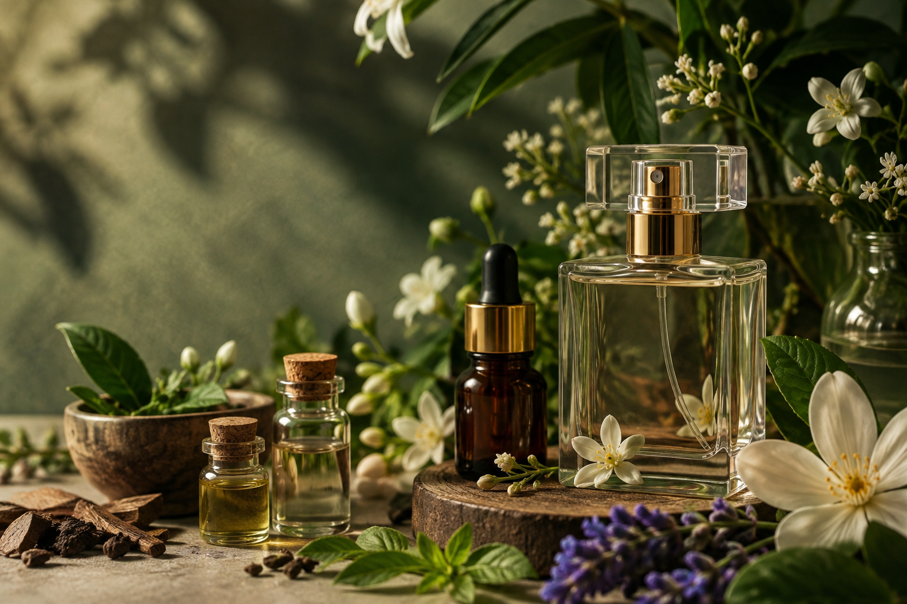
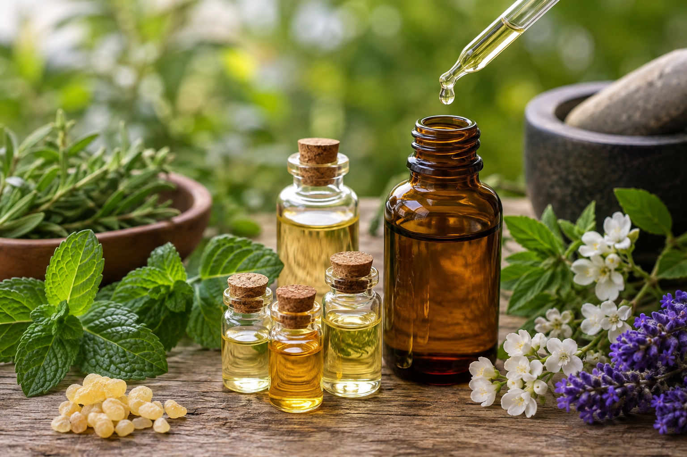
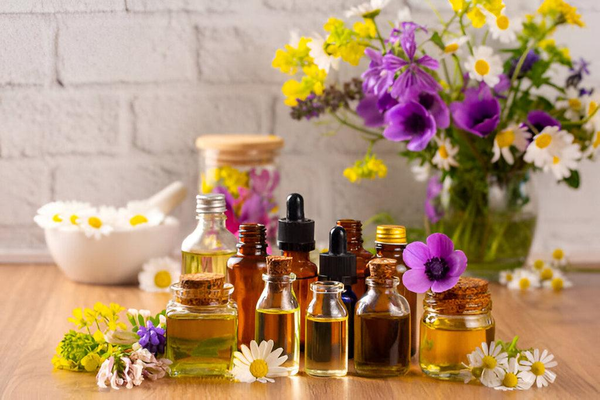
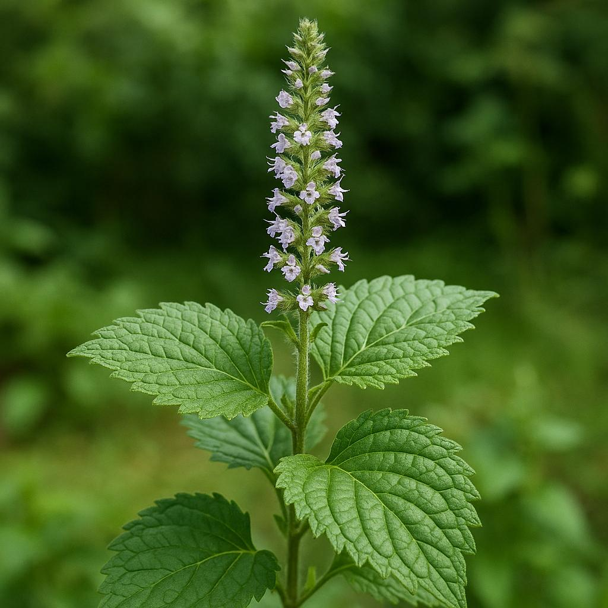
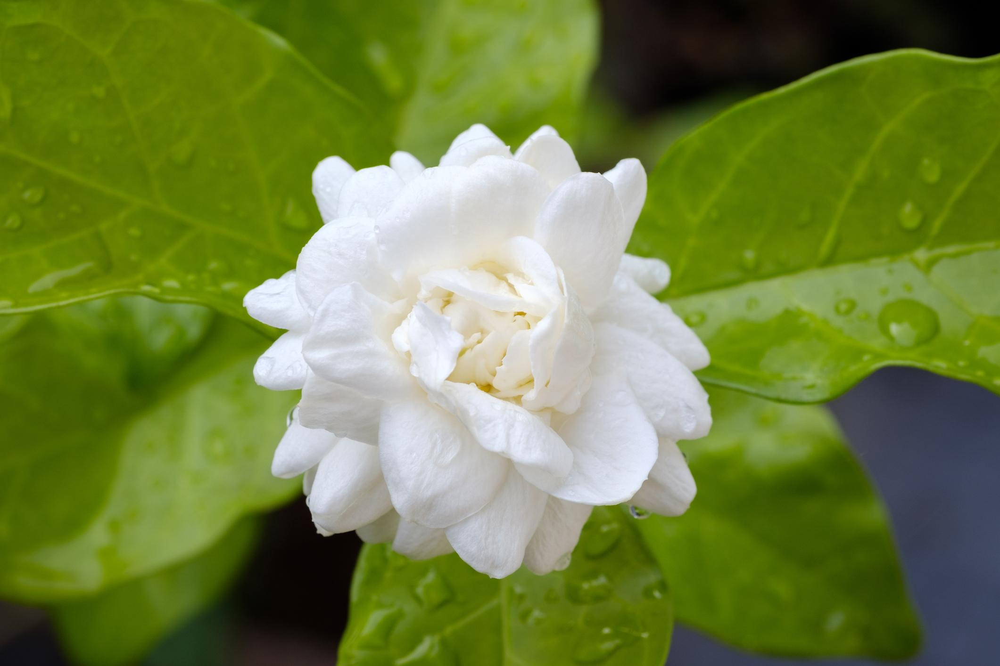
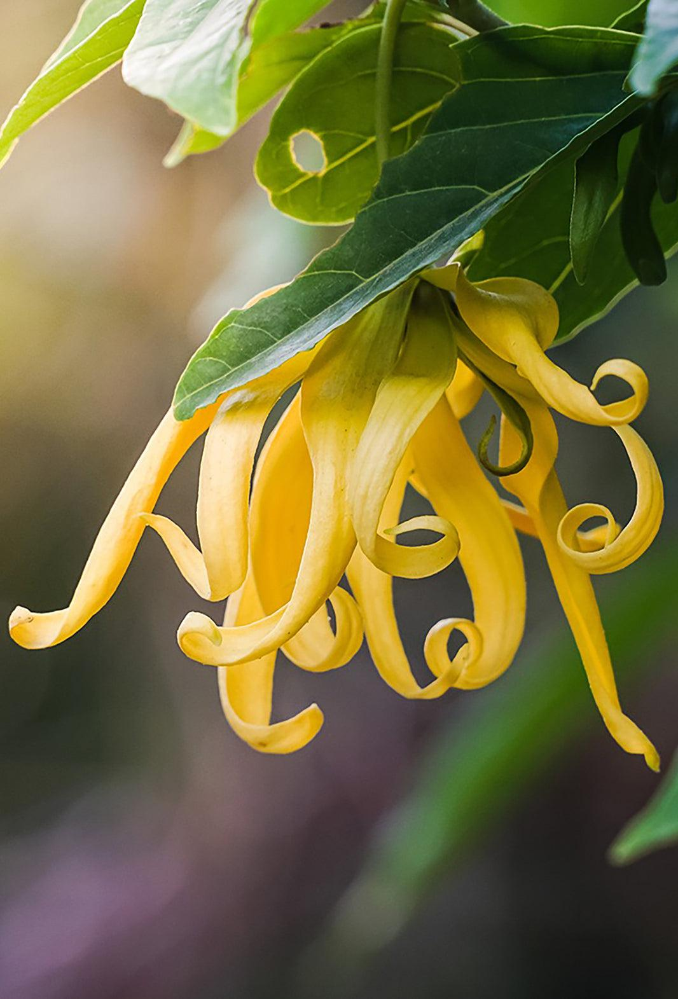
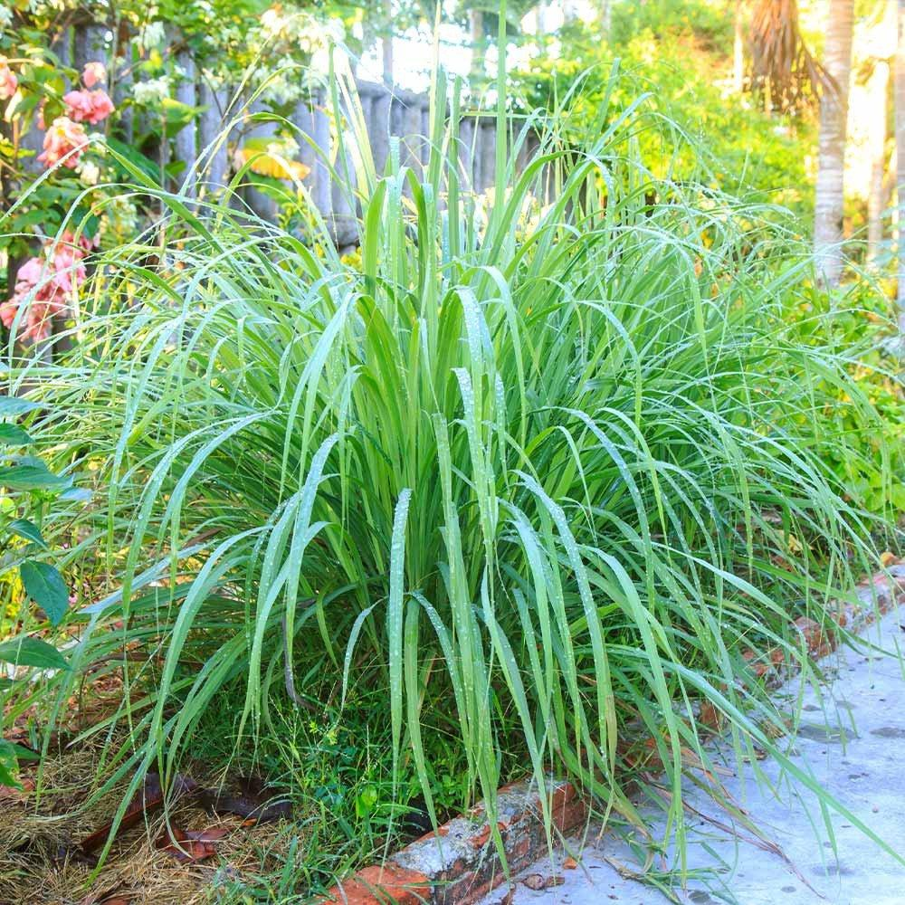
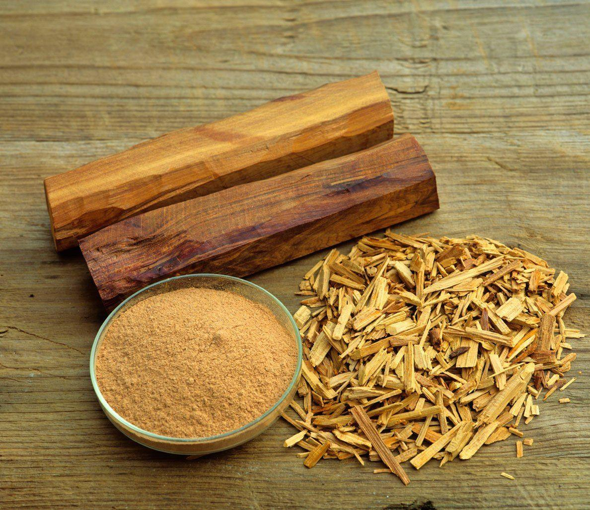

Pemanfaatan Tanaman sebagai Bahan Produk Wewangian

Indonesia memiliki keanekaragaman tumbuhan yang sangat besar. Berbagai jenis tanaman tidak hanya dapat dimanfaatkan sebagai bahan pangan, tetapi juga dapat diolah menjadi produk non pangan.
Pemanfaatan tanaman untuk produk non pangan dapat meningkatkan nilai guna bahan alam sekaligus membuka peluang ekonomi bagi masyarakat.
Produk non pangan nabati adalah produk yang dibuat atau diperoleh dari bahan tumbuhan dan tidak ditujukan untuk dikonsumsi sebagai makanan maupun minuman.
Bahan tumbuhan dapat diolah menjadi berbagai produk seperti parfum, minyak atsiri, kosmetik, sabun, pewangi, dan produk lainnya yang memiliki fungsi serta nilai ekonomi.
Produk non pangan berbahan nabati memiliki beberapa karakteristik yang membedakannya dari produk pangan maupun produk yang sepenuhnya berbahan sintetis.
Bahan nabati dapat dikembangkan menjadi berbagai jenis produk yang digunakan dalam kehidupan sehari-hari.
Minyak atsiri adalah minyak alami yang mengandung senyawa aromatik dan memiliki aroma khas. Minyak ini dapat diperoleh dari bagian tertentu tanaman.
Karena memiliki aroma yang kuat dan khas, minyak atsiri banyak dimanfaatkan sebagai bahan dalam industri parfum, kosmetik, sabun, pewangi, dan aromaterapi.

Tidak semua tanaman menghasilkan minyak atsiri dari bagian yang sama. Bagian yang dimanfaatkan bergantung pada jenis tanaman dan kandungan aromatik yang dimilikinya.
Salah satu metode yang dikenal untuk memperoleh minyak atsiri adalah penyulingan. Dalam proses ini, komponen aromatik tanaman dipisahkan dengan bantuan uap dan kemudian dikondensasikan.
Setelah proses berlangsung, minyak dan air hasil kondensasi dipisahkan sehingga diperoleh minyak atsiri.
Parfum adalah produk wewangian yang mengandung bahan aromatik yang memberikan aroma tertentu ketika digunakan.
Bahan aromatik dapat berasal dari bahan alami seperti minyak atsiri maupun bahan lain yang digunakan dalam formulasi wewangian.
Parfum berbahan nabati memanfaatkan bahan aromatik yang berasal dari tumbuhan sebagai salah satu sumber aroma.
Indonesia memiliki banyak tanaman yang berpotensi menghasilkan aroma khas, sehingga bahan-bahan tersebut dapat dikembangkan menjadi produk wewangian bernilai ekonomi.

Nilam merupakan tanaman yang terkenal sebagai salah satu sumber minyak atsiri. Bagian daun dan bagian tanaman tertentu dapat dimanfaatkan untuk memperoleh minyaknya.
Minyak nilam memiliki aroma khas yang kuat dan sering dimanfaatkan dalam industri wewangian. Karakternya juga membuatnya berguna dalam formulasi parfum.

Melati merupakan bunga yang dikenal memiliki aroma harum dan khas. Aroma bunga melati memberikan karakter floral yang lembut pada produk wewangian.
Karena karakter aromanya, melati banyak dikaitkan dengan bahan parfum dan berbagai produk pewangi.

Kenanga merupakan tanaman berbunga yang memiliki aroma khas. Bunga kenanga dapat dimanfaatkan sebagai sumber bahan aromatik.
Aroma kenanga memiliki karakter yang kuat dan khas sehingga berpotensi digunakan dalam formulasi berbagai produk wewangian.

Serai wangi merupakan tanaman yang dapat menghasilkan minyak atsiri dengan aroma segar dan khas.
Minyak serai wangi dapat dimanfaatkan dalam berbagai produk seperti pewangi dan produk lain yang membutuhkan aroma segar.

Cendana dikenal sebagai tanaman penghasil bahan aromatik dengan karakter aroma kayu yang khas, hangat, dan lembut.
Karakter aroma tersebut membuat cendana banyak dimanfaatkan dalam produk wewangian dan berbagai produk yang membutuhkan aroma khas kayu.

Pembuatan parfum membutuhkan pencampuran bahan aromatik dengan bahan pelarut dalam komposisi tertentu. Setelah dicampurkan, parfum biasanya perlu didiamkan agar komponennya tercampur dengan baik.
Pengembangan produk non pangan berbahan nabati dapat memberikan manfaat tidak hanya dari sisi penggunaan produk, tetapi juga dari sisi ekonomi dan pemanfaatan sumber daya lokal.
Penggunaan bahan nabati dalam produk memiliki keunggulan, tetapi tetap terdapat beberapa hal yang perlu diperhatikan selama proses produksi.
Produk berbahan nabati memiliki peluang untuk dikembangkan menjadi usaha karena bahan alam dapat diolah menjadi produk dengan bentuk, aroma, dan kemasan yang menarik.
Parfum, pewangi ruangan, aromaterapi, dan produk wewangian lainnya dapat menjadi contoh produk yang dikembangkan dengan memanfaatkan minyak atsiri.
Tanaman memiliki banyak manfaat yang tidak terbatas pada kebutuhan pangan. Berbagai bagian tanaman dapat dimanfaatkan untuk menghasilkan produk non pangan yang berguna dan memiliki nilai ekonomi.
Salah satu contohnya adalah pemanfaatan minyak atsiri sebagai bahan wewangian. Dengan pengolahan yang tepat, kekayaan tanaman lokal dapat dikembangkan menjadi produk yang menarik dan memiliki peluang usaha.
Ada pertanyaan?
"Kekayaan alam bukan hanya untuk dimanfaatkan, tetapi juga untuk dijaga dan dikembangkan secara bijak."